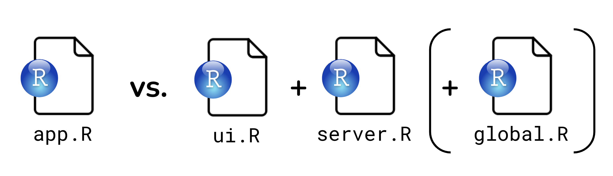
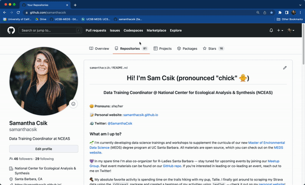

An R package that allows users to create an interactive web application using R code. This packages calls for HTML, JavaScript and CSS without you having to learn them.
Think interactive web pages built by people who love to code in R, no JavaScript experience necessary.
“Shiny is an open source R package that provides an elegant and powerful web framework for building web applications using R. Shiny helps you turn your analyses into interactive web applications without requiring HTML, CSS, or JavaScript knowledge.” - Posit
The big benefits of Shiny is that you create an interactive web application just by understanding the Shiny framework in R and present all the cool visualization you create using R packages in an interactive platform.
Why build a Shiny App?
Rationale
Example
Share data in an engaging format, allowing your audience to interact with your data
HydroTech Helper by Daniel Kerstan. An app to access real-time monitoring of USGS hydrology sites.
To make tools you create in R accessible to others. Particularly those who do not know R. Instead of sharing your code, you share your app and everyone can see the output
A web page that displays the app to a user (i.e. the user interface, or UI for short - frontend), and
A computer that powers the app (i.e. the server - backend)
Source: Intro to Shiny - Building reactive apps and dashboards, MEDS, UCSB
The UI controls the layout and appearance of your app and is written in HTML (but we use functions from the {shiny} package to write that HTML). The server handles the logic of the app – in other words, it is a set of instructions that tells the web page what to display when a user interacts with it.
Let’s take a look at how the code for a very simple Shiny app would look like to get a sense of the fundamental architecture of this tool.
library(shiny)# Define the UI1ui <- shiny::fluidPage("Hello there!")# Define the server2server <-function(input, output){ }# Generate the appshiny::shinyApp(ui = ui, server = server)
1
The fluidPage is a function that generates a page. It is important for allowing flexibility in UI layout which we’ll dive deeper later.
2
The server is actually a function with input and output as arguments. , where you’ll add all the code related to the computations.Because this app has no inputs or outputs, it doesn’t need anything in the ‘server’ component (though it still does require an “empty server”)
If we run the code above, we should see an app that is a blank white page with “Hello there!” written in the top left in plain text.
With this code we have essentially built a Shiny app. More complicated apps will certainly have more content in the UI and server sections but all Shiny apps will have this tripartite structure (Define UI, Define the Server and Generate the app).
15.2.2 What will go in each section?
Section
Component
UI
Inputs - or widgets ways the user can interact with (e.g. toggle, slide) and provide values to your app.
Outputs - The R objects that your user sees (e.g. tables, plots). Outputs respond when a user interacts with or changes an input value.
Layout - how the different components of the app are arranged.
Theme - defines the overall appearance of your app.
Server
Computations - code that will create the outputs displayed in your app (values, tables, plots, etc).
Today we are going to focus on understanding how the inputs and outputs work on the UI and how the sever operates to react based on inputs and display the outputs.
15.2.3 More on widgets and outputs
Widgets are web elements that users can interact with via the UI.
Widgets collect information from the user which is then used to update outputs created in the server. Shiny provides a set of standard widgets (see image below), but you can also explore widget extensions using a variety of other packages (e.g. {shinyWidgets}, {DT}, {plotly})
Outputs are R objects you will display on your app. This can be plots, tables, values, or others. Generally, these outputs are going to react to as the user interact with the inputs.
Example of input widgets and an output plot.
Source: Intro to Shiny - Building reactive apps and dashboards, MEDS, UCSB
15.2.4 Reactivity: brief intro
Reactivity is what makes Shiny apps responsive i.e. it lets the app instantly update itself whenever the user makes a change. At a very basic level, it looks something like this:
Source: Intro to Shiny - Building reactive apps and dashboards, MEDS, UCSB
How to understand reactivity?
Check out Garrett Grolemund’s article, How to understand reactivity in R for a more detailed overview of Shiny reactivity.
15.3 How to organize our files when developing a Shiny app
Before we jump into RStudio to create a Shiny app there a couple things worth mentioning about the structure of an app. First, when creating an app you have the option of either creating a single-file app or a two-file app. In both cases, the app looks the same, however the difference is you either have all the code for you app (ui + server) in one script named app.R or you have 2 files, one for ui (ui.R) and one for then server (server.R)

Source: Intro to Shiny - Building reactive apps and dashboards, MEDS, UCSB
Which one to choose?
It largely comes down to personal preference. A single-file format is best for smaller apps or when creating a reproducible example (reprex). While the two-file format is beneficial when writing large, complex apps where breaking apart code can make things a bit more navigable / maintainable.
Second, as we have learned through this course, it is always a good idea to create a GitHub repository + an Rproj to house all the moving pieces of our app. The image below presents a general repo structure to stay organized. We will follow this structure for the apps we will create during this lesson.
Source: Intro to Shiny - Building reactive apps and dashboards, MEDS, UCSB
15.4 Creating a Shiny app
Set up: Create GitHub Repo
Create a repo to house our soon-to-be app(s). Navigate to your GitHub account, go to Your repositories > Click on New repository. Named it shiny-app-example Remember to initiate your repo with a README and choose R as the language for the default .gitignore.
Clone your repo into your RStudio Session in the server. Click on the green “< >Code” button > Copy the HTTPS url and then go to RStudio
In RStudio Create a new project. Go to File > New Project > Version Control with Git > paste Repository url > Create Project
The GIF bellow shows each of these steps as a visual reference. Thank you Sam Csik, who created this great resource!

You can create a single-file app using RStudio’s built-in Shiny app template (e.g. File > New Project > New Directory > Shiny Application), but it’s just as easy to create it from scratch (and you’ll memorize the structure faster!). Let’s do that now.
Set up: Your first Shiny app
In your project repo, create a sub-directory to house your app. Name it single-file-app.
Create a new R script inside single-file-app/ and name it app.R – you must name your script app.R.
Copy or type the following code into app.R, or use the shinyappsnippet to automatically generate a shiny app template.
# load packages ----library(shiny)# user interface ----ui <-fluidPage()# server instructions ----server <-function(input, output) {}# combine UI & server into an app ----shinyApp(ui = ui, server = server)
Tip: Use code sections (denoted by # some text ----) to make navigating different sections of your app code a bit easier. Code sections will appear in your document Outline (find the button at the top right corner of the script/editor panel).
Once you have saved your app.R file, the “Run” code button should turn into a “Run App” button. Click that button to run your app (alternatively, run runApp("directory-name") in your console.
runApp("single-file-app")
You won’t see much yet, as we have only built a blank app (but a functioning app, nonetheless!).
You should also notice a red stop sign appear in the top right corner of your console indicating that R is busy – this is because your R session is currently acting as your Shiny app server and listening for any user interaction with your app. Because of this, you won’t be able to run any commands in the console until you quit your app. To quit the app you have to press the stop button.
15.4.1 Building a single-file-app
We are now going to add elements to our base app. We will use data from {palmerpenguin} package and add the following features to our app:
A title and subtitle
A slider widget for users to select a range of penguin body masses
A reactive scatterplot that updates based on user-supplied values
Source: Intro to Shiny - Building reactive apps and dashboards, MEDS, UCSB
About {palmerpenguin}
The palmerpenguins data contains size measurements for three penguin species (Chinstrap, Gentoo and Adelie) observed on three islands in the Palmer Archipelago, Antarctica (Torgersen, Biscoe, and Dream).
15.4.2 Adding text to the UI: Title and Subtitle
We will do this in the UI withing fluidPage(). Remember this is a layout function that creates the basic visual structure of your app page.
Let’s add a title and subtitle to our app. Make sure they are separated with a coma!
# user interface ----ui <-fluidPage(# app title ----"My App Title",# app subtitle ----"Exploring Antarctic Penguin Data" )
15.4.3 Style text in the UI
The UI is actually an HTML document. We can style our text by adding static HTML elements using tags – a list of functions that parallel common HTML tags (e.g. <h1> == tags$h1()) The most common tags also have wrapper functions (e.g. h1()).
# user interface ----ui <-fluidPage(# app title ---- tags$h1("My App Title"), # alternatively, you can use the `h1()` wrapper function# app subtitle ----h4(strong("Exploring Antarctic Penguin Data")) # alternatively, `tags$h4(tags$strong("text"))` )
Adding intupts and outputs
Next, we will begin to add some inputs and outputs to our UI inside fluidPage(). Anything that you put into fluidPage() will appear in our app’s user interface. We want inputs and outputs to show up there.
Step 1: add an input to your app (slider widget)
# user interface ----ui <-fluidPage(# app title ---- tags$h1("My App Title"), # alternatively, you can use the `h1()` wrapper function# app subtitle ----h4(strong("Exploring Antarctic Penguin Data")), # alternatively, `tags$h4(tags$strong("text"))`# body mass slider input ----sliderInput(inputId ="body_mass_input", label ="Select a range of body masses (g):",min =2700, max =6300, value =c(3000, 4000)) )
Step 2: add an output “placeholder” in the UI
Outputs in the UI create placeholders which are later filled by the server function.
Similar to input functions, all output functions take the same first argument, outputId (note Id not ID), which connects the front end UI with the back end server. For example, if your UI contains an output function with an outputId = "plot", the server function will access it (or in other words, know to place the plot in that particular placeholder) using the syntax output$plot.
# user interface ----ui <-fluidPage(# app title ---- tags$h1("My App Title"), # alternatively, you can use the `h1()` wrapper function# app subtitle ----h4(strong("Exploring Antarctic Penguin Data")), # alternatively, `tags$h4(tags$strong("text"))`# body mass slider input ----sliderInput(inputId ="body_mass_input", label ="Select a range of body masses (g):",min =2700, max =6300, value =c(3000, 4000)),# body mass plot ouput ----plotOutput(outputId ="bodyMass_scatterplot_output") )
Okay, it looks like nothing changed?? Remember, *Output() functions create placeholders, but we have not yet written the server instructions on how to fill and update those placeholders. We can inspect the HTML and see that there is, in fact, a placeholder area awaiting our eventual output, which will be a plot named “bodyMass_scatterplot_output”:
Source: Intro to Shiny - Building reactive apps and dashboards, MEDS, UCSB
Tell the server how to assemble inputs into outputs: Adding reactive scatterplot
Now that we’ve designed our input / output in the UI, we need to write the server instructions (i.e. write the server function) on how to use the input value(s) (i.e. penguin body mass range via a slider input) to update the output (scatter plot).
The server function is defined with two arguments, input and output, both of which are list-like objects. You must define both of these arguments within the server function. input contains the values of all the different inputs at any given time, while output is where you’ll save output objects to be displayed in the app.
RULES
Save objects you want to display to output$<id>
Build reactive objects using a render*() function
Access input values with input$
Rule 1: Save objects you want to display to output$<id>
# load packages ----library(shiny)# user interface ----ui <-fluidPage(# ~ previous code omitted for brevity ~# body mass slider ----sliderInput(inputId ="body_mass_input", label ="Select a range of body masses (g):",min =2700, max =6300, value =c(3000, 4000)),# body mass plot output ----plotOutput(outputId ="bodyMass_scatterplot_output") )# server instructions ----server <-function(input, output) {# render penguin scatter plot ---- output$bodyMass_scatterplot_output <-# code to generate plot here}
Note: In the UI, our outputId is quoted (“bodyMass_scatterplot_output”), but not in the server (bodyMass_scatterplot_output).
Rule 2: Build reactive objects with render*()
Each *Output() function in the UI is coupled with a render*() function in the server, which contains the “instructions” for creating the output based on user inputs (or in other words, the instructions for making your output reactive).
Output function
Render function
dataTableOutput()
renderDataTable()
imageOutput()
renderImage()
plotOutput()
renderPlot()
tableOutput()
renderTable()
textOutput()
renderText()
# load packages ----library(shiny)# user interface ----ui <-fluidPage(# ~ previous code omitted for brevity ~# body mass slider ----sliderInput(inputId ="body_mass_input", label ="Select a range of body masses (g):",min =2700, max =6300, value =c(3000, 4000)),# body mass plot output ----plotOutput(outputId ="bodyMass_scatterplot_output") )# server instructions ----server <-function(input, output) {# render penguin scatter plot ---- output$bodyMass_scatterplot_output <-renderPlot({# code to generate plot here }) }
Aside: Write the code for the output objects in separate script first
It is generally easier to experiment with the R objects you wan to show in your app (e.g. plots) in a separate script first and then copy the code over to your app. For example, if we want to make a scatter plot showing the relationship between flipper length and bill length for the different penguin species on palmerpenguins we would start by opening a new R script and write the code for this plot.
In RStudio, go to File > New File > RScript. Save this file as practice-script.R into the scratch folder. Now let’s copy and paste the code below. This code creates our scatter plot.
Copy your code over to your app, placing it inside the {} (and make sure to add any additional required packages to the top of your app.R script). Run your app. What do you notice?
# load packages ----library(shiny)library(palmerpenguins)library(tidyverse)# user interface ----ui <-fluidPage(# ~ previous code omitted for brevity ~# body mass slider ----sliderInput(inputId ="body_mass_input", label ="Select a range of body masses (g):",min =2700, max =6300, value =c(3000, 4000)),# body mass plot output ----plotOutput(outputId ="bodyMass_scatterplot_output"))# server instructions ----server <-function(input, output) {# render penguin scatter plot ---- output$bodyMass_scatterplot_output <-renderPlot({ ggplot(na.omit(penguins),aes(x = flipper_length_mm, y = bill_length_mm,color = species, shape = species)) +geom_point() +scale_color_manual(values =c("Adelie"="#FEA346", "Chinstrap"="#B251F1", "Gentoo"="#4BA4A4")) +scale_shape_manual(values =c("Adelie"=19, "Chinstrap"=17, "Gentoo"=15)) +labs(x ="Flipper length (mm)", y ="Bill length (mm)", color ="Penguin species", shape ="Penguin species") +theme_minimal() +theme(legend.position =c(0.85, 0.2), legend.background =element_rect(color ="white")) })}
Great! We have plot! But… It is not reactive. We have not yet told the server how to update the plot based on user inputs via the sliderInput() in the UI. Let’s do that next.
Aside: Practice filtering data in a separate script
Go back to out practice script practice-script.R and create a new data frame where we filter the body_mass_g column for observations within a specific range of values (in this example, values ranging from 3000 - 4000).
# filter penguins df for observations where body_mass_g >= 3000 & <= 4000 ----body_mass_df <- penguins %>%filter(body_mass_g %in%c(3000:4000))
Then, plot the new filtered data frame.
# plot new, filtered data ----ggplot(na.omit(body_mass_df), # plot 'body_mass_df' rather than 'penguins' dfaes(x = flipper_length_mm, y = bill_length_mm, color = species, shape = species)) +geom_point() +scale_color_manual(values =c("Adelie"="#FEA346", "Chinstrap"="#B251F1", "Gentoo"="#4BA4A4")) +scale_shape_manual(values =c("Adelie"=19, "Chinstrap"=17, "Gentoo"=15)) +labs(x ="Flipper length (mm)", y ="Bill length (mm)", color ="Penguin species", shape ="Penguin species") +theme_minimal() +theme(legend.position =c(0.85, 0.2),legend.background =element_rect(color ="white"))
Which part of our code needs to be updated when a user changes the slider range input?
For example if someone inputs the following range:
Remember that in our UI we we gave the slidrInput() an inputID = body_mass_input.
# body mass slider ----sliderInput(inputId ="body_mass_input", label ="Select a range of body masses (g):", min =2700, max =6300, value =c(3000, 4000))
Now we need to add the input piece on the server side. We can access the values of that slider input in the server using the syntax, input$body_mass_input. If you want your output to change according to the input values, substitute hard-coded values (e.g. 2857:5903) with the input values from the UI. For example, c(input$body_mass_input[1]:input$body_mass_input[2]
Reactive Data Frame
We need to create a reactive data frame that is able to update according to the input. For this we use the reactive() function.
When you call your reactive data frame in your ggplot, the data frame name must be followed by ()
# load packages ----library(shiny)library(palmerpenguins)library(tidyverse)# user interface ----ui <-fluidPage(# ~ previous code omitted for brevity ~# body mass slider ----sliderInput(inputId ="body_mass_input", label ="Select a range of body masses (g):",min =2700, max =6300, value =c(3000, 4000)),# body mass plot output ----plotOutput(outputId ="bodyMass_scatterplot_output"))# server instructions ----server <-function(input, output) {# filter body masses ---- body_mass_df <-reactive({ penguins %>%filter(body_mass_g %in%c(input$body_mass_input[1]:input$body_mass_input[2])) })# render penguin scatter plot ---- output$bodyMass_scatterplot_output <-renderPlot({ ggplot(na.omit(body_mass_df()),aes(x = flipper_length_mm, y = bill_length_mm,color = species, shape = species)) +geom_point() +scale_color_manual(values =c("Adelie"="#FEA346", "Chinstrap"="#B251F1", "Gentoo"="#4BA4A4")) +scale_shape_manual(values =c("Adelie"=19, "Chinstrap"=17, "Gentoo"=15)) +labs(x ="Flipper length (mm)", y ="Bill length (mm)", color ="Penguin species", shape ="Penguin species") +theme_minimal() +theme(legend.position =c(0.85, 0.2), legend.background =element_rect(color ="white")) })}
Now let’s tun the app! We should now see a reactive Shiny app. Note that reactivity automatically occurs whenever you use an input value to render an output object.
15.4.4 Recap: Steps to create a reactive Shiny app
We created an app.R file in it’s own directory and began our app with the template, though you can also create a two-file Shiny app by using separate ui.R and server.R files.
We added an input to the fluidPage() in our UI using an *Input() function and gave it a unique inputId (e.g. inputId = "unique_input_Id_name")
We created a placeholder for our reactive object by using an *Output() function in the fluidPage() of our UI and gave it an outputId (e.g. outputId = "output_Id_name")
We wrote the server instructions for how to assemble inputs into outputs, following these rules:
Save objects that you want to display to output$<id>
Build reactive objects using a render*() function (and similarly, build reactive data frames using reactive() )
Access input values with input$<id>
And… we saw that reactivity automatically occurs whenever we use an input value to render an output object.
15.5 Your turn
Add another reactive widget
Working alone or in groups, add a reactive DT datatable to your app with a checkboxGroupInput (widget) that allows users to select which year(s) to include in the table. Configure your checkboxGroupInput so that the years 2007 and 2008 are pre-selected.
Remember that the DT package allows you to create interactive tables where you can filter, sort, and do lots of other neat things tables in HTML format.
Once you’ve added the new feature your app should look like this:
Source: Intro to Shiny - Building reactive apps and dashboards, MEDS, UCSB
Tips
Use ?checkboxGroupInput to learn more about which arguments you need (remember, all inputs require an inputId and oftentimes a label, but there are others required to make this work as well)
Both {shiny} and {DT} packages have functions named dataTableOutput() and renderDataTable() – DT::renderDataTable() allows you to create both server-side and ui-side DataTables and supports additional DataTables features while shiny::renderDataTable() only provides server-side DataTables. Be sure to use the one from the {DT} package using the syntax packageName::functionName().
There are lots of ways to customize DT tables, but to create a basic one, all you need is DT::dataTable(your_dataframe)
Remember to follow the steps outlined on the previous slides:
Add an input (e.g. checkboxGroupInput) to the UI that users can interact with.
Add an output (e.g. DT::datatableOutput) to the UI that creates a placeholder space to fill with our eventual reactive output.
Tell the server how to assemble inputs into outputs following 3 rules:
Save objects you want to display to output$<id>
Build reactive objects using a render*() function
Access input values with input$<id>
NOTE: Clarify which functions to use in the server side of things vs which function to usi on the UI when creating a DT object!
Additional Boilerplate apps / templates
15.6 Shini cont’
2 file app (live code and follow) – Palmer penguin or Dog app? (40 min)